用我的出生日期开场可能没什么吸引力，不过，这可能是因为我和像杰罗姆·卡特（Jerome Carter）这样的人相处时间太少了。我和他还有他的妻子帕梅拉在他们位于亚利桑那州斯科茨代尔的家里吃午饭，我坐了下来，告诉他们我的生日是11月22日。
“哇！”现年57岁的前空中乘务员帕梅拉感叹道，她穿着漂亮的粉色上衣和牛仔裙。
杰罗姆看着我，用一种严肃的语气证实了妻子的热情：“你的生日里有一个很好的数字。”
53岁的杰罗姆看起来不像你想象中的那种神秘主义者。他穿着橙色的夏威夷衬衫和白色短裤，强壮的身躯展示出他以前曾是一名空手道冠军和国际保镖。“11月22日有什么好的？”我问。
“要知道，22是个卓越的数字，11也是。只有4个卓越的数字，分别是11、22、33和44。”
杰罗姆的面相与众不同，他的笑纹很明显，秃秃的头顶闪闪发光。他的嗓音悦耳动听，有点儿像体育评论员，也有点儿像说唱主持人。“你出生在22日。”他说，“我们的第一任总统就是在22日出生的，这绝非偶然。2加2等于几？4。我们什么时候选举总统？每4年。我们在第4个月交税。在美国一切都和4有关，一切。我们的第一支海军有13艘船，1加3等于4。我们曾经有13个殖民地，1加3等于4。独立宣言有13个签署者，加起来等于4。他们位于哪里？罗库斯特街1300号，加起来还是4！”
“数字4控制着钱，你生下来就在它的控制之下。这是一个非常强大的数字。4是个平方数，所以它跟法律、结构、政府、组织、新闻和建筑都有关。”
他来了兴致，继续说：“我就是这样告诉O. J. [1] 的，他就要获得自由了。我研究过他的律师，他所有律师的生日都和4有关。约翰尼·科克伦在22号出生，2加2等于4。F. 李·贝利在13号出生，1加3等于4。巴里·舍克是4号出生的。罗伯特·夏皮罗出生在31号，3加1等于4。他有4位律师都和4有关。判决什么时候出？是下午4点。这样一来，就算是希特勒都有可能获得自由了！”
“我给迈克·泰森占卜数字的时候他说，当遇到这些数字的时候，即使是你的错误也会变成好的结果。”
杰罗姆是一位专业的数字命理学家。他相信数字不仅仅代表数量，还代表质量。他说，他的天赋在于，他可以利用这种见解来理解人们的个性，甚至预测未来。演员、音乐家、运动员和公司为获得他的建议付了不少钱。“大多数的数字命理学家和灵媒都很穷，”他说，“这不合理。”但杰罗姆住在一栋豪华公寓里，他的车库里有三辆价值25000美元的摩托车。
出生日期是一个明显的数字来源，从中可以得出性格特征。名字也一样，因为单词可以被分解成字母，每个字母都代表一个数字。“吹牛老爹（Puff Daddy） [2] 当时差点儿要坐牢。”他说，“吹牛老爹的感情不顺利，于是我把他的名字改成了P. Diddy。他想安定下来，所以我把他的名字改成了Diddy。他采纳了我的建议。杰斯（Jay-Z）想娶碧昂丝，我告诉他，他需要改回原名。于是，他又叫回肖恩·卡特（Shawn Carter）。”
我问杰罗姆，他有什么建议给我。
“你的全名是什么？”他说。
“亚历山大·贝洛斯（Alexander Bellos），但大家都叫我亚历克斯（Alex）。”
“真是个可怜虫。”他故弄玄虚地停顿了一下。
“亚历山大更好吗？”我问。
他爽朗地说：“我只能说，在地球上存在过的最伟大的人之一并不叫‘亚历克斯大帝’。”
“我跟你说，我以前和名叫亚历克斯的人谈过。简单地说，名字的第一个字母很重要。A是1，你叫‘亚历克斯’，也能得到这个字母。但是‘亚历山大’的结尾是r，r等于9。所以你名字的第一个和最后一个字母对应的数字分别是1和9，也是阿尔法和奥米伽，它们分别代表开始和结束。现在让我们来看看亚历克斯的第一个和最后一个字母。单说x的发音。”他用一种像要呕吐的表情发出了“ekkss”的声音，“你想用这个吗？我不会的。我永远不会用亚历克斯。”
“神说，一个好名字比财富更值得选择，他可没说更值得选择的是绰号！”
“亚历克斯不是绰号。”我抗议道，“它只是个缩写。”
“亚历山大，你为什么要唱反调呢？”
然后，杰罗姆要来我的便笺簿，写下了下面这张表：
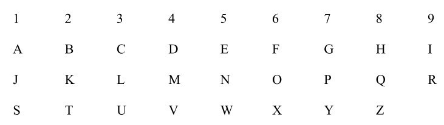
他解释说，这个表格显示了数字与字母的对应关系。他把手指放在第一栏：“代表1的字母是A、J和S，比如安拉（Allah）、耶和华（Jehovah）、耶稣（Jesus）、救世主（Saviour），还有救赎（Salvation）。2是外交官和大使的数字。2能给你很好的建议，如果你喜欢2，你一定擅长团队合作。这就是为什么你到汉堡王（Burger King）可以想怎么吃就怎么吃。数字3主宰着收音机、电视、娱乐和数字命理学，跟3对应的字母是C、L和U。当然，你在听广播和看电视的时候毫无线索（clue）。”他讽刺地眨了眨眼：“但如果你学习数字命理学，它会给你提供关于生命的线索。数字4对应着D、M和V。一辆车有几个轮子？你从哪里拿到驾照的？机动车辆管理局（DMV）。数字5位于1和10的中间，它对应着E、N和W。5是代表变化的数字。如果你把它对应的字母拼凑起来，就会得到单词‘NEW’（新的）。数字6代表金星、爱情、家庭和社区。当你看到一个美丽的女子，你看到了什么？狐狸（FOX）。7是富有灵性的数字。耶稣在25日出生，2加5等于7。8是代表商业、金融、贸易和货币的数字。它对应H、Q、Z，你把钱存在哪里了？在总部（headquaters） [3] 。数字9是唯一一个只对应两个字母的数字，I和R。你和牙买加人交流过吗？伙计，一切都很‘irie’（好）。”
最后，他放下笔，盯着我的脸，“这，”他说，“就是杰罗姆·卡特的毕达哥拉斯体系法。”
毕达哥拉斯之所以成为数学界最著名的名字，完全是因为他的三角形定理（我们后面会讲到）。不过，他也有其他贡献，比如发现了平方数。想象一下我们按照惯例用鹅卵石数数。［“鹅卵石”在拉丁语中是calculus，它就是英语中calculate（计算）一词的由来。］假设你要排出一个正方形阵列，将鹅卵石等距摆放在行和列中，一个两行两列的正方形需要4块鹅卵石，而一个三行三列的正方形需要9块鹅卵石。换言之，将n与自身相乘，等于求出一个包含n行和n列的正方形阵列中的鹅卵石的数量。这个想法如此符合本能，以至于英语中用来描述自我相乘的单词与正方形是同一个词（square）。
毕达哥拉斯在他的正方形里观察到了一些完美的规律。他发现，在边长为2的正方形中，鹅卵石数量（4）是1和3的和，而边长为3的正方形中的鹅卵石数量（9）是1、3和5之和。边长是4的正方形中有16块鹅卵石，也可以表示成1+3+5+7。换句话说，n的平方是前n个奇数的和。可以通过观察构造鹅卵石正方形的过程来发现这个规律：
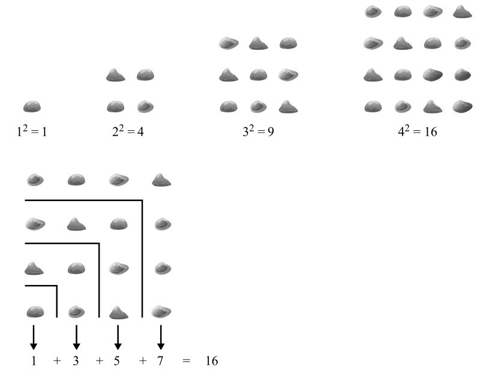
图2-1 鹅卵石正方形
毕达哥拉斯发现的另一条规律与音乐有关。据传，有一天，他路过一个铁匠铺，听到里面传来叮叮当当的打铁声，他注意到响声的音调随着铁砧的重量而改变，这让他开始研究振动的弦的音高与弦的长度之间的关系。他发现，如果弦长减半，音高就会升高八度。当弦按3：2和4：3的比例分段时，会形成其他和声，等等。
毕达哥拉斯被他在自然界中发现的数字规律迷住了，他相信只有通过数学才能理解宇宙的秘密。然而，他并没有仅仅把数学看作一种描述自然的工具，而是把它视为自然的本质，他还教导学生要尊敬数字。毕达哥拉斯不仅仅是个学者，他还是一个神秘教派的领袖，那就是毕达哥拉斯学派，这个组织痴迷于哲学和数学冥想。学派结合了健康农场、新兵训练营和道场的特征，门徒必须遵守严格的规矩，比如不朝着太阳撒尿、不娶戴金首饰的女人、不从躺在街上的驴身边经过。因此，选择加入学派的人必须经过5年的考察期，在考察期内，他们只能透过帘幕看到毕达哥拉斯。
在毕达哥拉斯的精神宇宙中，10是神圣的数字，但这不是因为手指或脚趾的总数是10，而是因为10是前4个数字的总和（1+2+3+4=10），而前4个数字象征着四大元素：火、气、水和土。数字2代表女性，3代表男性，5便是两者的结合。学派的徽章是一个五角星形。虽然崇拜数字的想法在现在看来很奇怪，但这或许反映了人们在发现早期抽象的数学知识时的惊奇程度。当你此前根本不知道自然界有这些规律，而突然发现了这些规律时，那种兴奋的感觉一定像是一种宗教般的觉醒。
毕达哥拉斯不仅教授数字命理学，还信仰转世。他可能是素食者。事实上，他的饮食要求在两千多年间广受争论。学派以禁止食用小而圆的黑蚕豆而闻名，有关毕达哥拉斯死亡的一种说法是，他为了躲避袭击者逃到一片蚕豆田里。故事说，他宁愿被抓住杀死，也不愿践踏蚕豆。根据一种古老的说法，豆子之所以神圣，是因为它们和人类一样，发于原始的淤泥中。毕达哥拉斯证明了这一点，他说如果你咀嚼豆子，用牙齿把它们碾碎，然后在阳光下晒一会儿，豆子就会产生精液的味道。而最近有人提出的一个假说认为，学派成员只是患有遗传性的蚕豆过敏。
毕达哥拉斯生活在前6世纪。他没有写过任何书，我们对他的了解都是根据他去世多年后后人的记载。尽管毕达哥拉斯学派在古代雅典的喜剧剧场里受到嘲讽，但从基督教时代起，毕达哥拉斯本人的形象相当正面，他被认为是一位独特的天才。他在数学方面的见解使他成为伟大的古希腊哲学的先驱。有人说他创造了奇迹，有些人还奇怪地认为毕达哥拉斯有一条黄金大腿。另一些人写道，他曾经走过一条河，河向他大声呼喊，喊得所有人都能听到：“你好，毕达哥拉斯。”这种死后神话的形成与另一位地中海精神领袖的故事很相似，事实上，在某一段时间，毕达哥拉斯和耶稣还是宗教上的对头。2世纪，基督教在罗马扎根之际，尤利娅·多姆纳（Julia Domna）皇后鼓励她的百姓崇拜泰安那的阿波罗尼奥斯（Apollonius of Tyana），阿波罗尼奥斯声称他是毕达哥拉斯转世。
毕达哥拉斯留下了互相矛盾的两方面的遗产，那就是他的数学和反数学。事实上，也许正如一些学者现在所认为的，唯一可以确认的是他提出的思想正是那些充满神秘主义的思想。毕达哥拉斯的神秘主义自古以来就一直存在于西方思想中，在文艺复兴时期尤其盛行，那时人们重新发现了公元前4世纪左右的一首诗《毕达哥拉斯黄金诗篇》。毕达哥拉斯学派是许多神秘学秘密社团的典范，甚至影响了共济会的创立。这个有着精心设计的仪式的兄弟会组织，据传仅在英国就有近50万会员。毕达哥拉斯还启发了西方数字命理学的奠基人L. 道·巴利埃特夫人（Mrs. L. Dow Balliett），她是美国大西洋城的一位家庭主妇，在1908年写了《数字的哲学》一书。“毕达哥拉斯说，天和地会随着一个数字或数字的位数而共振。”她写道。她还提出了一种算命方法，把字母表中的每个字母都与1到9中的一个数字对应。她认为，把一个人名字中字母对应的数字加起来，就能预测性格特征。我也试验过这个想法。亚历克斯是1+3+5+6=15，再把答案的两位数相加，1+5=6，整个过程就完成了。我的名字与数字6共振，这意味着我“应该始终小心地穿着，喜欢精致的效果和颜色，把你的特殊颜色——橙色、鲜红色和淡紫色调整到较浅的色调，但始终保持它们的真实色调”。我的宝石是黄玉、钻石、缟玛瑙和碧玉，我的矿物是硼砂，我的花是晚香玉、月桂和菊花。我的气味是山茶味。
当然，数字命理学是现代神秘主义自助餐上的一道经久不衰的菜，愿意就彩票号码向你提出建议或猜测未来某个日期的先兆的大师随处可见。这听起来像是一种无害的找乐子的方式。我很享受与杰罗姆·卡特的谈话，但是给数字赋予精神上的意义也可能产生恶劣的后果。例如，1987年，缅甸政府发行了面值为9的倍数的新钞票，唯一的原因是执政将军最喜欢数字9。新的钞票马上造成了一场经济危机，导致了1988年8月8日的暴动。（8是反独裁运动最喜欢的数字。）然而，抗议活动在9月18日被镇压，也就是在第9个月，一个能被9整除的日期。
毕达哥拉斯定理指出，对于任何直角三角形，斜边的平方等于两条直角边的平方之和。这句话像一首古老的童谣或圣诞歌曲一样，刻在我的脑海中。它带来一种怀旧而安宁的感觉，甚至已经超出了它原本的含义。
斜边是与直角相对的边，直角是一圈的1/4。这个定理是基础几何的一大突破，是我们在学校学的第一个真正有深刻意义的数学概念。让我觉得有趣的是，它揭示了数字和空间之间的深层联系。不是所有三角形都有直角，但是只要它是直角三角形，两直角边的平方和一定等于第三边的平方。这个定理反过来也适用：随机选取三个数字，如果其中两个的平方和等于第三个数的平方，那么你可以用以这些数字为长度的线段，构造出一个直角三角形。
一些关于毕达哥拉斯的评论提到，他在建立学派之前，曾前往埃及实地考察。如果他在埃及的建筑工地上待过一段时间，他就会看到工人们造直角的方法，这就是后来以他名字命名的定理的应用。一根绳子上被打了几个结，它们把绳长分为3、4和5个单位。由于32 +42 =52 ，当绳子绕着三根柱子被拽紧，每根柱子上都有一个结时，就形成了一个直角三角形。
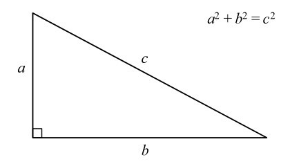
图2-2 毕达哥拉斯定理
拽紧绳子是形成直角最方便的方法，而直角是使砖块或巨石块（比如用来建造金字塔的砖块）能彼此挨紧、叠在一起所必需的。（斜边这个词来源于希腊语，意为“拽紧”。）埃及人可以用3、4和5之外的许多数字来得到直角。事实上，存在无限个a、b和c，可以使a2 +b2 =c2 成立。他们可以把绳子分成5、12和13份，因为25+144=169；也可以分成8、15和17份，因为64+225=289；甚至2772、9605和9997份（7683984+92256025=99940009），尽管这很难实现。数字3、4、5最适合这个任务。它们不仅是三个最小的满足条件的数字组合，也是满足条件的唯一一组连续整数。由于这种拽紧绳子以获得直角的传统，边长比例是3：4：5的直角三角形也被称为埃及三角形。这个产生直角的仪器小到可以放进口袋里，是数学艺术品中的一颗明珠，也是一件优雅、简洁而强大的智力工艺品。
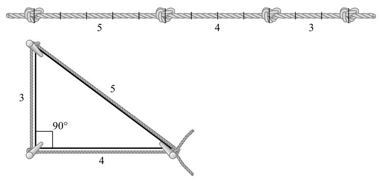
图2-3 埃及人的“三角板”是把一根绳子以3：4：5的比例划分，绷在三根柱子上形成直角
毕达哥拉斯定理中提到的平方既可以通过数字理解，也可以通过图片理解，也就是用三角形的边画出一个正方形。想象一下，图2-4中的正方形是由黄金制成的。你没有与毕达哥拉斯学派的成员订婚，所以拿走黄金是没问题的。你可以选择两个较小的正方形，也可以选择一个最大的正方形。你选哪个？
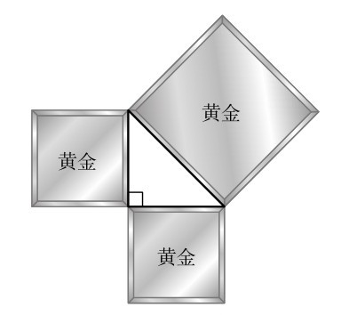
图2-4 选两个小的，还是一个大的？
数学家雷蒙德·斯穆利安（Raymond Smullyan）说，当他向他的学生提出这个问题时，一半学生想要一个大正方形，另一半想要另外两个小正方形。当他告诉学生这两个选择其实没什么区别时，学生们都惊呆了。
这是真的，因为按照毕达哥拉斯定理，两个小正方形的面积之和等于大正方形的面积。所有直角三角形都可以用这种方法扩展成三个正方形，大正方形的面积刚好等于两个小正方形的面积之和。并不存在斜边上的正方形面积不是另两边的正方形面积之和的情况。无论何时，它们都是完美契合的。
我们还不清楚毕达哥拉斯是否真的发现了这一定理，尽管他的名字从古典时代就和这个定理联系在了一起。无论他是否真的发现了这一定理，它都证明了他的世界观是正确的，数学中的宇宙充满着和谐。事实上，这个定理揭示的不仅仅是直角三角形边上的正方形之间的关系。例如，斜边上半圆的面积也等于另两边半圆的面积之和。斜边上的五边形面积等于另两边的五边形面积之和，这同样适用于六边形、八边形以及任何规则或不规则的形状。例如，如果在直角三角形上画三个蒙娜丽莎，那么大的蒙娜丽莎的面积等于两个小蒙娜丽莎的面积之和。
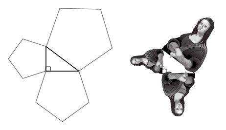
图2-5 毕达哥拉斯定理的推论
毕达哥拉斯定理给我的真正乐趣在于证明它成立的过程。最简单的证明见图2-6，这个证明可以追溯到中国，甚至可能在毕达哥拉斯出生之前就诞生了，这也是许多人怀疑最早提出这个定理的人并非毕达哥拉斯的原因之一。
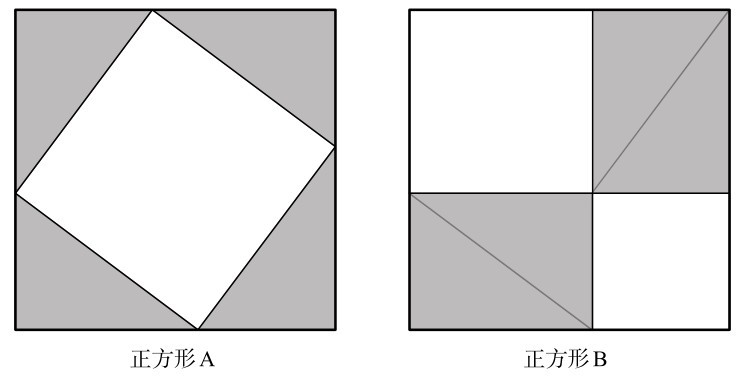
图2-6 毕达哥拉斯定理的一种证明
你可以先看一会儿这两个正方形，再往下读。正方形A与正方形B大小相同，正方形内所有直角三角形的大小也相同。因为正方形A和B的面积相等，它们内部的白色区域的面积同样相等。现在，请注意正方形A里的白色大正方形，它正是直角三角形斜边所延伸出的正方形。而正方形B内较小的两个白色正方形，则分别是三角形另两条直角边延伸出的正方形。换句话说，斜边的平方等于另两边的平方和。完美！
因为我们可以为任何形状或大小的直角三角形构造出类似的正方形，所以这个定理在所有情况下都一定成立。
类似这样的证明会带来令人惊喜的发现，让人瞬间感受到数学带来的快感，仿佛一切都说得通了。这令人感到非常满足，甚至会带来一种身体上的愉悦。印度数学家婆什伽罗被一个类似的对毕达哥拉斯定理的证明震惊到了，在他于12世纪创作的数学著作《莉拉瓦蒂》（Lilavati）中的一张图片下面，他只写了一个词：“看！”
毕达哥拉斯定理还有其他许多证明，在图2-7中有一个格外可爱的证明，它被认为是由阿拉伯数学家安纳里齐（Annairizi）在大约公元900年发现的。这个定理蕴含在图中的重复模式之中。你能认出它吗？（如果你看不出来，附录将提供一些帮助，详见第484页。）
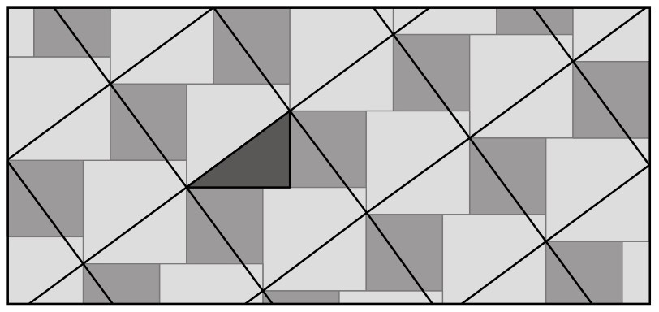
图2-7 安纳里齐发现的一种证明毕达哥拉斯定理的方法
在1940年出版的图书《毕达哥拉斯命题》中，伊莱沙·斯科特·卢米斯（Elisha Scott Loomis）发表了对该定理的371个证明，这些证明是由不同的人提出来的。其中一个可追溯到1888年，据说是由盲眼女孩E. A. 克利奇提出的，另一个来自1938年一名16岁的高中生安·康迪特，列奥纳多·达·芬奇和美国总统詹姆斯·A. 加菲尔德也给出了证明。当加菲尔德还是共和党国会议员的时候，他在和同事做数学游戏时偶然得出了这个证明。他在1876年首次发表这一证明时说：“我们认为这是一个可以让两院议员撇开党派分歧团结起来的东西。”
不同的证明表现了数学强大的生命力。解决数学问题从来不是只有一种“正确”的方法，绘制出不同人的头脑在寻找解决方案时所走的不同路径是一件颇有趣味的事。图2-8是来自三个不同时代的三个证明，其中一个来自公元3世纪的中国数学家刘徽，第二个来自列奥纳多·达·芬奇（1452—1519），第三个来自约1917年的亨利·杜德尼（Henry Dudeney），他是英国最著名的趣味问题出题人。刘徽和杜德尼的方法都是“分割证明”，其中两个小正方形被分割成几个部分，把它们重组后就可以得到完美的正方形。达·芬奇的方法则需要多思考一会儿。（如果需要帮助，详见第484页的附录。）
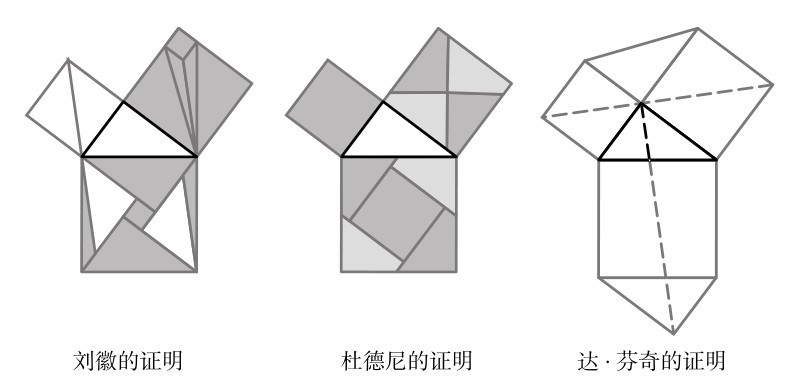
图2-8 毕达哥拉斯定理的其他几种证明
数学家赫尔曼·巴拉瓦莱（Hermann Baravalle）提供了一种动态的证明方式，如图2-9所示。这幅图十分生动，大正方形像变形虫一样，被分成了两个较小的正方形。在每个阶段，阴影区域的面积都是相同的。唯一不那么明显的是第4步。当一个平行四边形被“剪切”，或者说当它以一种底边长度和高都不变的方式移动时，它的面积保持不变。
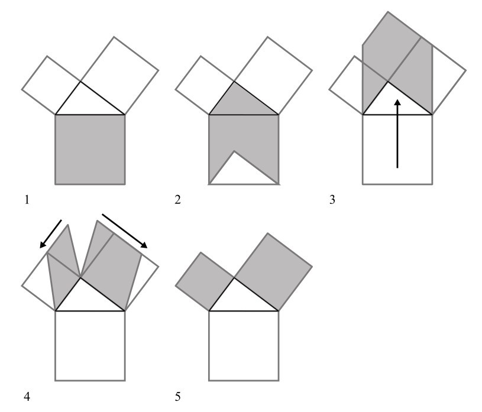
图2-9 巴拉瓦莱的证明
巴拉瓦莱的证明与欧几里得给出的最知名的证明十分类似，欧几里得是在前300年左右提出这一证明的。
欧几里得是毕达哥拉斯之后最著名的古希腊数学家，他生活在亚历山大港，这座城市由亚历山大大帝建立，他从不把自己的名字缩写成亚历克斯。欧几里得的传世著作《几何原本》中包含465个定理，这本书对当时古希腊的所有几何学知识进行了总结。古希腊数学几乎完全被几何学占据，这个词源于希腊语中的“地球”和“测量”，尽管《几何原本》与现实世界无关。欧几里得在一个由点和线构成的抽象世界中操作一切。他的工具箱里只有一支铅笔、一把尺子和一个圆规，因此这些东西几百年来一直是儿童铅笔盒的基本组成部分。
欧几里得的第一个任务（第一卷，命题1）是证明，给定任何线段，都可以用该线段作为一条边，画出一个等边三角形，也就是一个三条边长度相等的三角形：
第一步：把圆规的针尖放在给定线段的一个端点上，画一个圆弧与线段的另一端相交。
第二步：把圆规针尖移到线的另一个端点上，重复第一步。现在我们有了两条相交的圆弧。
第三步：通过圆弧的一个交点，画两条线段，与原始线段的两个端点连接。
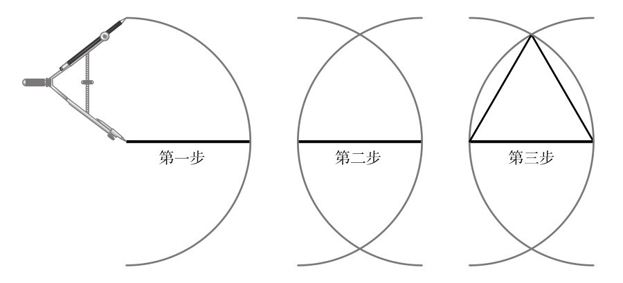
图2-10 《几何原本》，命题1
然后，他一丝不苟地提出了一个又一个命题，揭示了线、三角形和圆的一系列相等的性质。例如，命题9告诉你如何平分一个角，也就是将一个角划分成两个相等的角。命题32表示，三角形的内角和总是等于两个直角之和，也就是180度。《几何原本》是一部充满学究气的严谨巨著。里面没有任何内容是想当然地得出的，每一行在逻辑上都承接着前一行。欧几里得仅从几个基本公理出发，就获得了一系列令人信服的结果。
第一卷以命题47为最后的“大结局”。1570年，第一版英译本中的注释写道：“这条最优秀和最著名的定理，最早是由伟大的哲学家毕达哥拉斯提出的，根据希罗内、普洛克罗斯、吕修斯和维特鲁威的记载，他因发现这一定理而感受到超乎想象的愉悦，因而杀了一头公牛来献祭。后来那些粗俗的作者常把这条定理称为‘杜卡农’（Dulcarnon）。”杜卡农的意思是有两只角，或者“在智慧的尽头”，这可能是因为证明它的图示有两个角状的正方形，或者可能是因为它确实非常难于理解。
欧几里得对毕达哥拉斯定理的证明一点儿也不漂亮。他的证明很长，细致而迂回，还需要一个布满了线和叠加的三角形的图形。19世纪的德国哲学家亚瑟·叔本华说，这个证明如此复杂，且没有必要，是一个“典型的反常行为”。公平地说，欧几里得既不（像杜德尼一样）追求趣味，也不（像安纳里齐那样）追求美学，也不（像巴拉瓦莱那样）追求直觉。欧几里得最关心的是他的演绎系统是否严谨。
毕达哥拉斯看到了数字的奇迹，而欧几里得在《几何原本》里揭示了更深层次的美，那是一个由数学真理构成的严密体系。他证明，数学知识的秩序与其他事物的不同。《几何原本》的命题永远正确。它们并不会随着时间的推移变得越来越不确定，也不会与我们的生活渐行渐远（这就是为什么欧几里得的命题仍然在学校里被教授，而古希腊剧作家、诗人和历史学家的作品则没有再被教授）。欧几里得方法令人敬畏。据说，17世纪的英国博学家托马斯·霍布斯40岁时在图书馆中瞥到了一本打开的《几何原本》复本。他读了其中一个命题，惊呼道：“天啊，这不可能！”他又读了前面的命题，然后读了更前面的那个命题，终于确信这一切都有理有据。在这个过程中，他爱上了几何学，因为它规定了一种确定性，而几何学的演绎方法也影响了霍布斯最著名的政治哲学著作。自从《几何原本》开始，逻辑推理就成了所有人类探索的金标准，直到现在。
欧几里得首先将二维空间分割成一系列形状，它们被称为多边形，这些形状仅由直线构成。他用圆规和直尺不仅能画出等边三角形，还能画出正方形、等边五边形和等边六边形。每条边长度都相同，且相邻两边之间的夹角角度都相等的多边形，被称为正多边形（见图2-11）。但有趣的是，欧几里得的方法并不能画出所有正多边形。例如，正七边形就不能用圆规和直尺来构造，正八边形是可以构造出来的，但正九边形又不能。同时，具有65537条边的极复杂的正多边形也可以构造出来，事实上它也已经被构造出来了。（选择这个数字是因为它等于216 +1。）1894年，德国数学家约翰·古斯塔夫·赫尔梅斯（Johann Gustav Hermes）花了10年时间才完成。
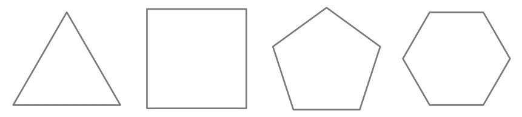
图2-11 正多边形
欧几里得还致力于研究相同的正多边形连接在一起所组成的三维形状。只有5种形状满足要求：正四面体、立方体、正八面体、正二十面体和正十二面体，这5种形状被称为柏拉图多面体（见图2-12），因为柏拉图在《蒂迈欧篇》中写过它们。柏拉图把它们看作宇宙的四个元素以及环绕的宇宙空间。正四面体是火，立方体是土，正八面体是空气，正二十面体是水，而正十二面体是环绕的穹顶。柏拉图多面体的一个特别有趣之处在于，它们是完全对称的。旋转、转动、倒转或翻转它们，它们都始终保持不变。
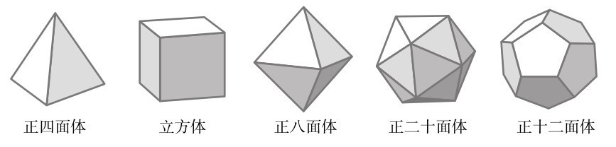
图2-12 柏拉图多面体
在《几何原本》的第13卷，也就是最后一卷中，欧几里得从等边三角形开始，然后到正方形、正五边形、正六边形等，计算出了所有可以由正多边形构成的可能的多面体，证明了为什么只存在5个柏拉图多面体。图2-13显示了他是如何得出这一结论的。要用多边形生成立体对象，一定要有三条边相交的点，形成一个角，或者叫顶点。例如，当你在一个顶点处连接3个等边三角形时，你会得到一个正四面体（A）。而如果在一个顶点连接4个等边三角形，则得到一个角锥体（B）。角锥体并不是一个柏拉图多面体，因为不是所有的面都一样，但是在底部再贴一个倒立的角锥体，你就得到了一个正八面体。将5个等边三角形连接在一起，就得到了正二十面体（C）的一部分。但是加入第6个，你会得到……一个平面（D）。用6个等边三角形无法构成一个立体角，所以没有其他方法可以创造一个由等边三角形组成的不同的柏拉图多面体了。用正方形继续这个过程，很明显只有一种方法可以在一个角处连接三个正方形（E），最后会变成一个立方体。如果用4个正方形，你就会得到……一个平面（F）。用正方形不能组成其他柏拉图多面体了。类似地，3个五边形合在一起能形成一个立体角，进而形成正十二面体（G）。4个五边形就不可能合在一起了。3个六边形在同一点会连成一个平面（H），所以不可能用它们制造出一个立体图形。因为在一个顶点上不可能连接3个超过6条边的正多边形，所以再之后就没有柏拉图多面体了。
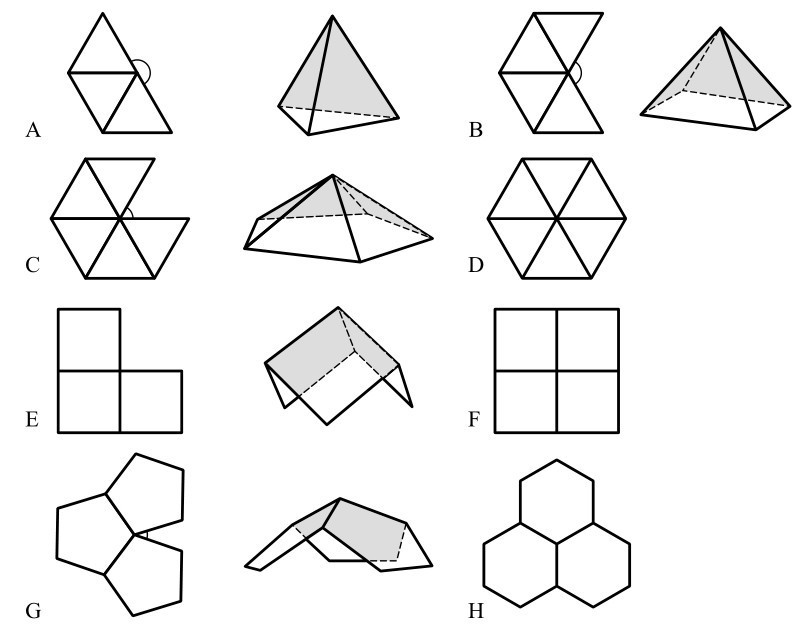
图2-13 只存在5个柏拉图多面体的证明
许多数学家使用欧几里得的方法提出了新的问题，并有了新的发现。例如，1471年，德国数学家雷乔蒙塔努斯（Regiomontanus）给朋友写了一封信，他在信中提出了以下问题：“在地面上的哪个点上，会让竖直悬挂的杆子看起来最大？”这个问题也叫作“雕像问题”。想象一下，你面前的基座上有一尊雕像。当你离得太近时，你必须抬起头，以一个很窄的角度来仰望它。当你在很远的地方时，你必须瞪大眼睛，再次从一个很窄的角度看它。那么，哪里是观赏它的最佳地点呢？
假设我们从侧面观察，如图2-14所示。我们想在代表视平线的虚线上找到一点，从这个点到雕像的角度最大。解法来自《几何原本》第三卷，这一卷与圆有关。当穿过雕像顶部和底部的圆与虚线相切时，角度最大。
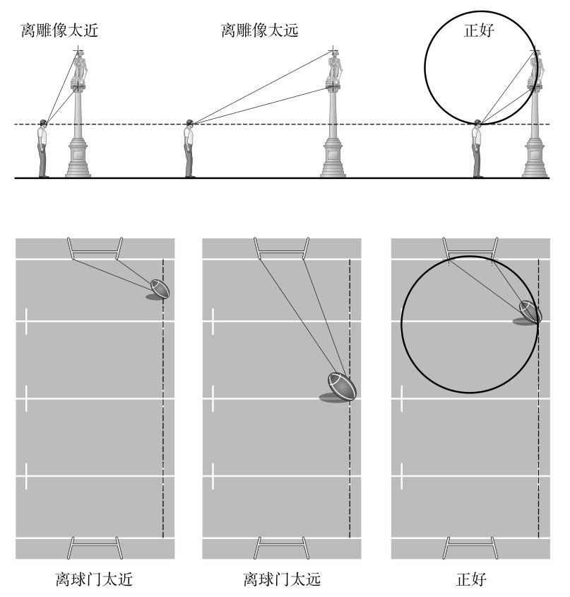
图2-14 雷乔蒙塔努斯的雕像和橄榄球问题
这个问题等价于橄榄球运动员所面临的问题，他们想知道从球门线踢定位球的最佳距离。如果你离对方的球门线太近，角度就太小；但如果你离得太远，角度也会减小。最佳位置在哪里？这里我们需要在球场的鸟瞰图上面绘制一个类似的图。在踢球点的虚线上，与对向球门柱成最大角度的点正是通过两个门柱的圆与该线相切的点。
也许欧几里得几何中最惊人的结果是揭示了三角形的一个美妙特性。我们先想想三角形的中心在哪里。出人意料的是，这个问题并没有一个清晰的答案。实际上，有4种方法可以定义三角形的中心，但它们给出的是不同的点，见图2-15。（除非三角形是等边的，这种情况下这些点都重合。）第一个被称为垂心，是指通过每个顶点与其对边垂直的线（也就是高）的交点。对于任何一个三角形来说，所有高总是相交于同一点，这已经相当令人惊讶了。
第二个点是外心，它是经过边的中点的垂线的交点。同样，这样的三条线也永远交于一点，无论你选择何种三角形。
第三个是重心，即经过顶点和对边中点的直线的交点。它们也一定会相交于一点。最后，中心圆是一个圆，它穿过每条边的中点，也穿过边和高的交点。每个三角形都有一个中心圆，其圆心是三角形内的第四种中心点。
1767年，莱昂哈德·欧拉证明了所有三角形的垂心、外心、重心和中心圆的圆心始终在同一条直线上。这个结果令人震惊。不管三角形的形状如何，这4个点之间的关系都惊人地一致。和谐真是奇妙。毕达哥拉斯也会对这个结果感到震惊的。
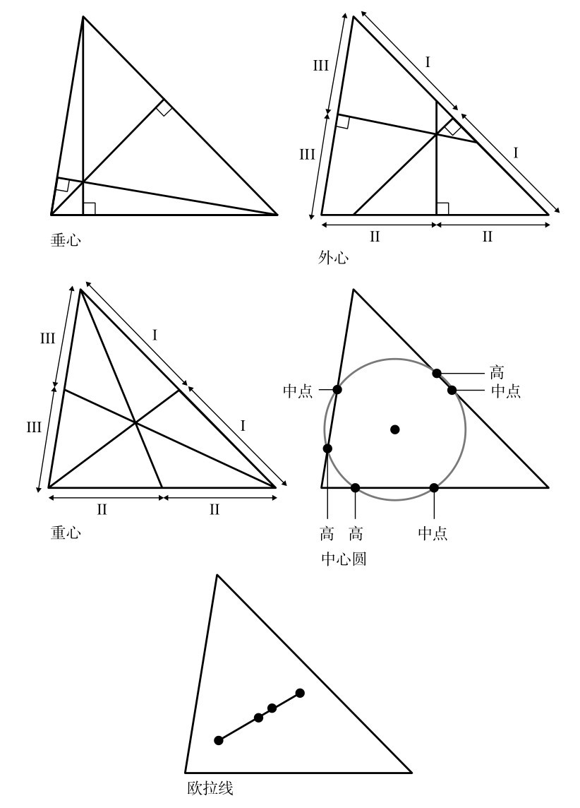
图2-15 构造欧拉线
虽然现在听起来可能很难理解，但《几何原本》曾经也是“畅销书”。到20世纪为止，《几何原本》的印刷版本数据说仅次于《圣经》。考虑到《几何原本》并不易读，这就更加惊人了。然而，其中一个版本值得一提，因为它的非正统写法使文本变得更加易读。奥利弗·伯恩（Oliver Byrne）是马尔维纳斯群岛女王行宫的一名测量员，他用色彩重写了欧几里得几何。他没有用长长的证明，而是用红色、黄色、蓝色或黑色等几何色块画出图形，标出角度、线条和面积。他的《几何原本》“……用彩色的图表和符号代替字母，便于学习”，于1847年出版，被称为“整个19世纪最奇特、最美丽的书之一”。1851年，它代表英国参加万国博览会，成为会上展出的为数不多的几本英国图书之一，尽管公众没有感受到这种兴奋。实际上，伯恩的出版商在1853年破产了，超过75%的《几何原本》库存未能售出。这本书高昂的生产成本加速了破产。
伯恩的插图证明让欧几里得几何变得更为直观，比近年来的色彩教科书早得多。在美学上，它也领先于时代。其花哨的原色、不对称的布局、棱角、抽象的形状和充裕的留白空间，比20世纪的艺术家的绘画作品更早出现。伯恩的书看起来像是对彼埃·蒙德里安的致敬，而这本书出版比蒙德里安出生还要早25年。
尽管欧几里得的方法很成熟，但它无法解决所有问题。事实上，有些相当简单的问题仅仅用圆规和尺子是无法解决的。古希腊人为此还付出了代价。前430年，雅典城内伤寒大流行。雅典市民在提洛求得神谕，要他们把立方体的阿波罗圣坛的大小增加一倍。看到这样一个看似简单的任务就能拯救他们，他们稍稍安心了一些，于是建造了一个新的圣坛，把立方体的边长变为原来的两倍。然而，将立方体的边长翻倍后，立方体的体积增加到2的立方，也就是8倍。于是阿波罗十分震怒，让瘟疫恶化。神设定的挑战被称为德利安问题，也就是给定一个立方体，构造出一个体积是它两倍的立方体，它是欧几里得的工具无法解决的三个古代经典问题之一。另外两个分别是“化圆为方”问题，也就是构造一个与给定的圆面积相同的正方形，以及三等分角问题，也就是构造一个角，使其角度是原来的角的1/3。认识到为什么欧几里得几何不能解决这些问题，以及为什么其他方法可以解决这些问题，一直是数学研究关注的焦点。
古希腊人并不是唯一对几何图形的神奇之处感兴趣的人群。伊斯兰教最神圣的物体是一种柏拉图多面体：克尔白（Ka’ba），也就是立方体的意思，这是一座位于麦加大清真寺中心的黑色立方体建筑，朝圣者会逆时针围绕着它行走。（事实上，它的尺寸和一个完美的立方体只差一点儿。）无论你在世界的哪个角落，你在朝圣时都要面向这个点。数学在伊斯兰教中的作用比任何其他主要宗教都要大。在全球定位系统（GPS）技术出现1000多年前，面朝麦加主要依赖于复杂的天文计算，这也是将近1000年来伊斯兰科学一直繁盛的原因之一。
伊斯兰神圣建筑的墙壁、天花板和地板上巧妙的几何镶嵌图案都是其艺术的缩影，因为伊斯兰教的圣地禁止出现人和动物的形象。几何学被认为表达了超越人类的真理，这与毕达哥拉斯的立场非常一致，即数学可以揭示宇宙的奥秘。伊斯兰工匠在他们的图案中创造的对称和无限循环是一种寓言，也是对神圣数学秩序的表达。
重复的镶嵌图案与其说体现了复制图像的美感，不如说体现了瓷砖完美填充空间的不费力的美。几何形状设计得越好，艺术的美越引人注目。计算出什么形状的瓷砖会铺满墙，不会留下间隙，也不会重叠，这是一个很有挑战性的数学问题，可能任何用瓷砖铺过浴室地板的人对此都很熟悉。事实证明，只有三种正多边形能完成“镶嵌”，镶嵌是一个技术术语，表示完全覆盖一个平面而没有遗漏。这三种正多边形分别是等边三角形、正方形和正六边形。事实上，三角形不一定得是等边才能镶嵌，三条边可以是任何尺寸。对于任何一个三角形，只需将其与一个颠倒放置的相同三角形连接起来，如图2-16所示，组合成一个平行四边形就可以了。平行四边形可以和相同的平行四边形连接成一行，并排地放在一起。这种类型的镶嵌，也就是不断重复的相同模式，被称为周期性镶嵌。
一种方砖能铺满一个平坦的表面，这是很显然的。任何矩形也一样，这也是一个看似不值一提的观察（盯着砖墙看也是在观察长方形镶嵌规则）。然而，令人惊讶的是，任何四边形都可以创造出周期性的镶嵌图形。画出任意形状的四边形，再把它倒过来跟原来的四边形相连，像我们对上面的三角形所做的那样，你就可以构造一个六边形，它可能是一个不规则的六边形，但其中的对边都相等。由于对边是相等的，因此我们可以将这些六边形排成一行，使相邻的边彼此完美地契合。如图2-16所示，这种契合在每条边的方向上都有效，重复的六边形能完美地填充一个平面。
之前说过，周期性镶嵌是一种无限的重复。不过，周期性还有一个更实际的定义。想象一个平面向各个方向无限延伸，被图2-16所示的三角形镶嵌图形覆盖。现在想象在素描纸上复制一个相同的镶嵌图形，并将其放置在平面上。如果抬起副本将其移动到另一个位置，然后再将其放回平面上，可以使副本的图案与原始图案完美对齐，我们就说图案具有周期性。我们可以通过三角形镶嵌图形来实现这一点，将副本向左（或者向右、向上、向下）移动任意三角形的距离。当副本与新的位置对齐时，它就和下面的镶嵌图形完美吻合。这种周期性的定义很有帮助，因为有了它，我们就更容易解释非周期性的概念了。非周期性镶嵌就是当一个图案被复制后，平面上只有唯一的位置让副本与原图完全契合，也就是它的原始位置。例如，图2-17的镶嵌就是非周期的。（想象一下，在不断变大的同心五边形中，镶嵌将永远进行下去。）如果你复制了它，这个副本只能在一个位置上与下方的镶嵌图形重合。
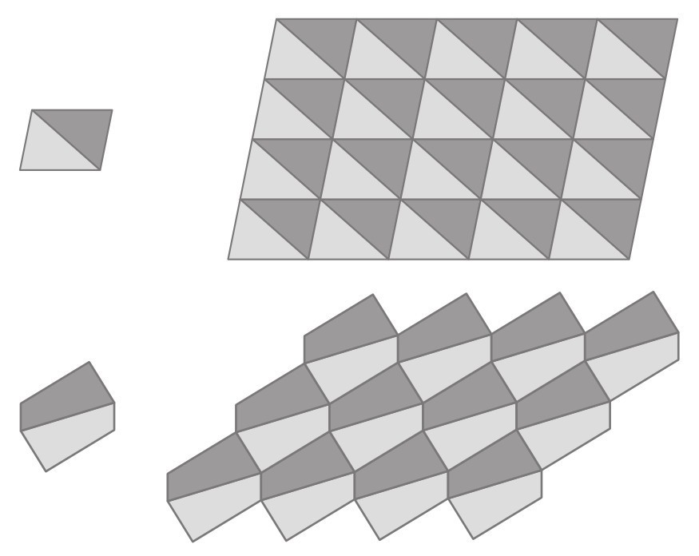
图2-16 三角形和四边形镶嵌
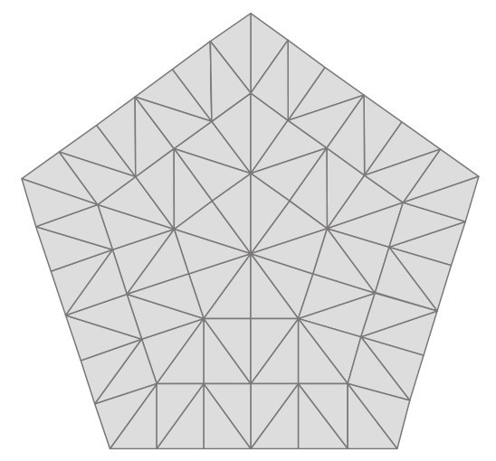
图2-17 非周期性镶嵌
许多可以周期性排列的地砖，也能被非周期性地排列。然而，在20世纪下半叶，一个困扰数学家的问题是，是否存在一组只能非周期性排列的地砖形状，它们可以覆盖一个平面，但无法创造重复的图案。这个想法是反直觉的——如果形状合适，可以在不留任何缝隙的情况下铺满一个平面，那么它们能够以一种常规且重复的方式平铺在一个平面上似乎是十分自然的事情。长期以来，人们认为不存在非周期性平铺。
接着，罗杰·彭罗斯（Roger Penrose）带着他的“风筝”和“飞镖”来了。20世纪70年代，宇宙学家彭罗斯发明了几种非周期平铺，令数学家们兴奋不已。最简单的方法是以一种特定的方式将菱形切成两部分，形成两种不同的形状，他称之为风筝和飞镖。由于任何四边形都可以形成周期性的镶嵌，彭罗斯必须制定一种规则，确定这些地砖该如何连接，从而将它们可以形成的图案限制成非周期性的。为了实现这一点，他在每个风筝和飞镖上画上两条弧线，并规定地砖的连接方式必须满足让相似的弧线总能相连。
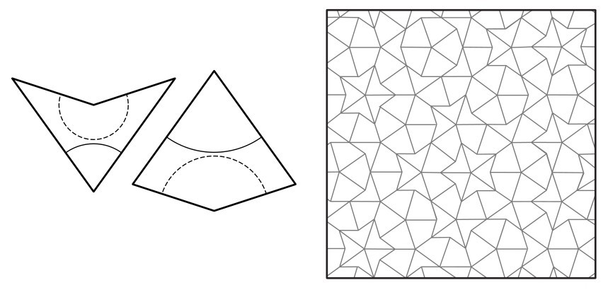
图2-18 彭罗斯的飞镖和风筝只能非周期性地平铺
非周期性平铺的发现对数学来说是一个令人兴奋的突破，但最大的惊喜来自后来的物理学和化学发现。20世纪80年代，研究人员惊奇地发现了一种此前认为不可能存在的晶体。这种晶体的微观结构呈非周期性排列模式，在三维空间中的表现就像彭罗斯的地砖在二维空间中的表现一样。这些被称为准晶的结构的存在，改变了科学家理解物质本质的方式，因为它与经典理论相悖。在经典理论中，所有晶体都必须具有柏拉图多面体的对称晶格。彭罗斯可能是为了好玩才发明了他的平铺方式，但它们对自然世界的预言远超预期。
5个世纪前，伊斯兰几何学家也可能对非周期性镶嵌有所了解。2007年，哈佛大学的陆述义（Peter J. Lu）和普林斯顿大学的保罗·J.斯坦哈特（Paul J. Steinhardt）表示，他们对乌兹别克斯坦、阿富汗、伊朗、伊拉克和土耳其的镶嵌图案进行的研究表明，工匠们比西方早5个世纪制作出了“近乎完美的准晶彭罗斯图案”。因此，伊斯兰数学可能比科学史学者传统上认为的还要先进。
印度教也用几何学来展示神的形象。曼荼罗（Mandala）是神和宇宙的代表性象征，其中最复杂的是“斯里具”（Sri Yantra，见图2-19），它是由5个向下的三角形和4个向上的三角形组成的图形，它们都重叠在一个中心点，也就是明点（bindu）上。据说这个图形代表了宇宙散发和再吸收的基本过程，是冥想和敬奉的焦点。它无法被精确地构建出来，一首长诗神秘地描述了它的结构，但是神圣的文本没有给出足够的细节。数学家至今仍然搞不清楚它究竟是如何被正确构造出来的。
另一种东方文化也早已享受到了几何图形的乐趣。折纸这种艺术起源于日本农场主的习俗，他们在收获季节会用一张纸盛放向神献祭的谷物。他们不会把谷物放在一张平的纸上，而是将纸沿对角线折叠。在过去的几百年里，折纸作为一种非正式的消遣在日本蓬勃发展，通常是父母和孩子一起玩耍。它完全符合日本人对艺术的审美、对细节的注重，形式也很经济。
名片折纸听起来像是日本的终极发明，融合了这个国家喜爱的两个事物。但事实上，日本人厌恶这种做法。日本人把名片看作是个人的延伸，所以玩弄名片被认为是一种严重的冒犯，即使是出于折纸的目的。当我在东京的一家餐馆尝试折叠一张名片时，我几乎因为这个反社会行为而被驱逐出去。然而，在世界的其他地方，名片折纸是一种现代亚文化。它可以追溯到100多年前，原本只是一种（现在已经过时的）拜帖折纸。
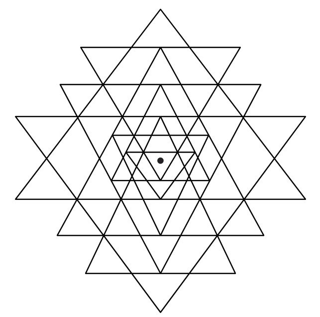
图2-19 斯里具
一个简单的例子是把名片的右下角对准左上角折叠，再折叠不重叠的部分，如图2-20所示。用另一张名片重复此操作，但这次将左下角与右上角重叠。你现在有两张折过的名片，可以把它们插在一起，形成一个四面体。有人告诉我，在数学会议期间递出这样的名片将给人留下深刻的印象。
4张名片可以组成一个八面体，10张名片可以组成一个二十面体。制造第4个柏拉图多面体，也就是立方体，也不难。把两张名片像加号一样叠在一起，然后按图2-20所示的方式折叠襟翼，就形成了两个正方形。将6张名片都折叠成这种方式，就形成了一个立方体，但襟翼留在了外面。你需要将另外6张名片滑动到每个面上，才能使立方体的外表看起来平整。
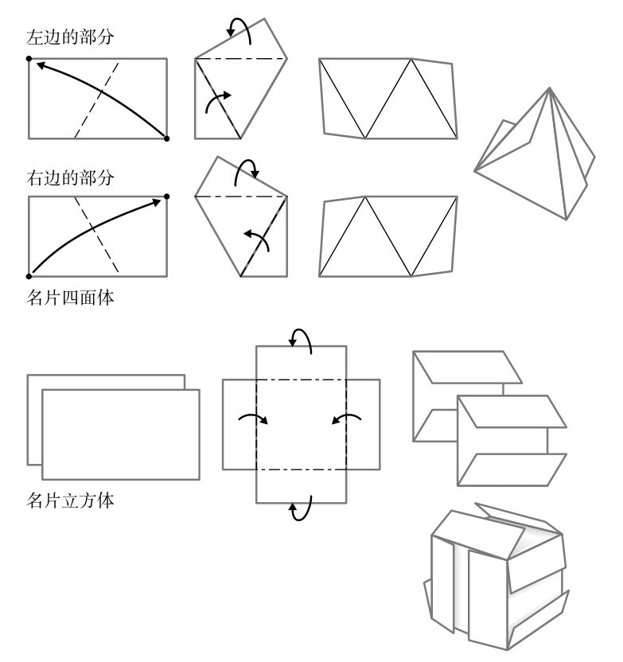
图2-20 名片立方体的折法
让尼娜·莫斯利（Jeannine Mosely）是一位名片折纸的大师，她是马萨诸塞州的一名软件开发人员。几年前，她在自己的车库里找到10万张名片——她的同事给了她三批名片，第一次是公司改名，第二次是公司搬迁，后来又发现新名片上有错别字。你可以用10万张名片做出很多四面体，然而，莫斯利的野心远比柏拉图多面体要大得多。为什么把自己局限在古希腊人的水平上呢？发展了2000年的几何学难道没有创造出更令人兴奋的三维形状吗？凭借她的资源，莫斯利觉得她足以应对这一领域的终极挑战，那就是门格尔海绵（Menger sponge）。
在说门格尔海绵之前，我要先介绍一下谢尔宾斯基地毯（Sierpinski carpet），这种奇异的图形是波兰数学家沃茨瓦夫·谢尔宾斯基（Wacław Sierpinski）在1916年发明的。我们先从一个黑色方块开始。想象它由9个相同的小正方形组成，移除中间的一个（图2-21A）。现在对于剩下的每个小正方形，再重复这个操作。也就是说，想象它们都是由9个更小的正方形组成的，移除它们中心的正方形（B）。然后再次重复这个过程（C）。如果你无限地继续下去，你就会得到谢尔宾斯基地毯。
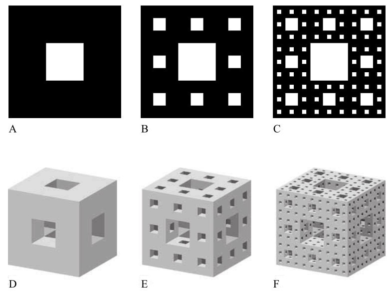
图2-21 谢尔宾斯基地毯与门格尔海绵
1926年，奥地利数学家卡尔·门格尔（Karl Menger）提出了一种三维的谢尔宾斯基地毯，现在它被称为门格尔海绵。我们先从立方体开始。想象它由27个相同的小立方体组成，移除位于中心的小立方体，以及位于原始立方体各面中心的6个小立方体。现在，剩下的立方体看起来像是被三个方孔穿过（图2-21D）。将剩下的20个小立方体视为原始立方体，从它的27个小立方体中移除7个更小的立方体（E）。再重复一次这个过程（F），这个木块看起来就像被一群迷恋几何学的蛀虫蛀空了一样。
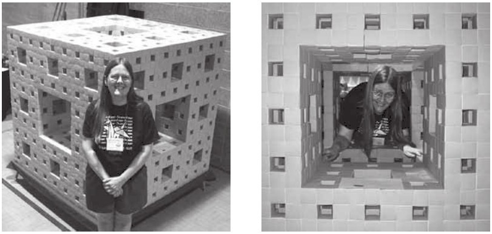
图2-22 在盒子里思考：让尼娜·莫斯利和她的门格尔海绵
门格尔海绵绝妙地展现了一个悖论。当你不断移除越来越小的立方体时，海绵的体积会越来越小，最终就渐渐看不见了，这就好像蛀虫已经吃掉了所有立方体一样。然而，每次挖去的立方体会使海绵的表面积增加。通过越来越多次的迭代，你可以使它的表面积大于你想要的任何面积，这意味着随着迭代次数接近无穷大，海绵的表面积也接近无穷大。在极限情况下，门格尔海绵是一个具有无限大的表面积的物体，但它却是看不见的。
莫斯利构建了一个三级的门格尔海绵，也就是说，这个海绵是移除了三轮立方体后得到的（F）。这个工程花了她10年时间。大约200个人帮助她完成了这一工程，总共用了66048张名片。成品“海绵”的高、宽和深达4英尺8英寸（约1.4米）。
“很长一段时间以来，我一直在想，我是不是在做一件极其荒谬的事情。”她告诉我，“但当我完成后，我站在它旁边，意识到它有多么宏伟。一件特别美妙的事情是，你可以把你的头和肩膀伸进这个模型里，从一个前所未有的视角看这个令人惊叹的物品。”你会完全被它迷住，因为离得越近，看到的图案就越多。“你只要看一眼，就不需要任何解释了。看一眼就能明白一切。这是一个现实化了的想法，数学被视觉呈现了出来。”用名片建造的门格尔海绵是一件精心制作的艺术品，它激发了情感和智力的反应。它不仅是一种艺术上的创造，也是一种几何学的创造。
虽然折纸艺术最初是日本人的发明，但折纸的技术也在其他国家有所发展。欧洲折纸的先驱是德国教育家弗里德里希·弗勒贝尔（Friedrich Fröbel），他在19世纪中叶用折纸的方法来教幼儿几何。折纸的优点是让幼儿园的孩子能感觉到他们创造的物体，而不仅仅是在图画中看到它们。在弗勒贝尔的启发下，印度数学家T. 孙达拉·罗（T. Sundara Row）出版了《折纸几何练习》，他认为折纸是一种数学方法，在某些情况下比欧几里得的方法更强大。他写道：“用折纸表示几个重要的几何过程……比用圆规和尺子容易得多。”但即使是他，也没有预料到折纸到底有多强大。
1936年，费拉拉大学的意大利数学家玛格丽塔·P. 贝洛赫（Margherita P. Beloch）发表了一篇论文，她证明，用一张长度是L的纸，她可以折出L的立方根的长度。她当时可能还没有意识到，这意味着折纸可以解决古希腊人面对的那个难题，也就是神谕要求的把立方体的体积加倍。这个问题可以被重新表述为构建一个立方体，要求它的边是给定立方体的边的
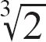
，也就是2的三次方根。在折纸的情况下，提洛问题被简化为用长度1折叠出 的长度。因为我们可以把长度1对折，把1变成2，然后再按照贝洛赫的步骤找到这个新的长度的立方根，问题就解决了。按照贝洛赫的方法，还可以证明任何角度都可以通过折纸被三等分——这破解了古代无法解决的第二个问题。然而，贝洛赫的论文几十年来一直默默无闻，直到20世纪70年代，数学界才开始认真看待折纸。1980年，一位日本数学家首次发表了通过折纸证明提洛问题的文章。1986年，一位美国数学家又发表了用折纸把角三等分的证明过程。数学家高涨的兴趣部分源于对有着2000多年历史的欧几里得正统学说的失望。欧几里得把作图限定为只能使用尺子和圆规，缩小了数学研究的范围。事实证明，折纸的应用范围比尺子和圆规更广，例如构造正多边形等。欧几里得能够画出等边三角形、正方形、正五边形和正六边形，但前面也提到，尺规作图无法作出正七边形和正九边形。折纸可以相对容易地折叠出正七边形和正九边形，不过它对正十一边形就无能为力了。（严格来说，这是“一次一折”的结果。如果允许一次折多条褶皱，理论上可以构造任何边数的正多边形，但实际操作可能有些难度。）
折纸绝非儿戏，它现在已站在了数学的前沿。这是真的。在埃里克·德迈纳（Erik Demaine）17岁的时候，他和合作者证明通过折叠一张纸，并只剪一下，就可以创造出任何由直边构成的形状。一旦决定了你想要的形状，你就可以折叠纸张，剪一下以展开纸张，得到你要的形状。虽然看似只有制作越来越复杂的圣诞节装饰品的小学生对这种结果有兴趣，但德迈纳的研究已经在工业中找到了用途，特别是在汽车安全气囊的设计中。折纸与蛋白质的折叠也有关，它现在甚至还被应用到了最意想不到的领域，比如制造动脉支架、机器人和卫星的太阳能电池板。
罗伯特·朗（Robert Lang）是一位现代折纸大师，他不仅提出了折纸背后的理论，还把这种消遣变成了一种雕塑的艺术形式。朗曾是美国航空航天局（NASA）的物理学家，他开创性地利用计算机设计折叠图案，创造出越来越复杂的新图形。他创作的形象包括虫子、蝎子、恐龙和一个弹着三角钢琴的人。折叠图案几乎和成品一样漂亮。
美国现在的折纸研究已经能和日本并驾齐驱，部分原因在于在日本，折纸作为一种非正式的追求深深扎根于社会中，把它作为一门科学来认真对待反而有了更多障碍。不同组织之间滑稽的派系斗争也并没有改善这一状况，每个组织都声称可以触达折纸的灵魂。我惊讶地听到国际折纸协会主席小林一夫将罗伯特·朗的作品斥为精英主义。“他的研究是为自己做的。”他反对说，“我的折纸是帮助病人康复和教育孩子的。”
不过，还是有许多日本折纸爱好者在从事有趣的工作，我在位于东京以北的筑波现代大学城见到了其中一位。芳贺和夫是一位已退休的昆虫学家，主要研究昆虫卵的胚胎发育。他的小办公室里堆满了书籍和蝴蝶的陈列柜。74岁 [4] 的芳贺戴着一副黑色细边的大眼镜，让他的脸的轮廓更加分明。我立刻注意到他非常害羞，温柔又谦虚，对接受采访感到相当紧张。
但芳贺的胆怯只限于社交。在折纸时，他勇于打破常规。他主动远离折纸的主流，从来没有被任何习俗束缚。例如，按照日本传统折纸的规则，折第一下只能采取两种方法，都是对折：要么沿对角线折叠，将两个相对的角叠在一起，要么沿中线折叠，将相邻的角叠在一起。正方形的对角线和中线被称为“主折痕”。
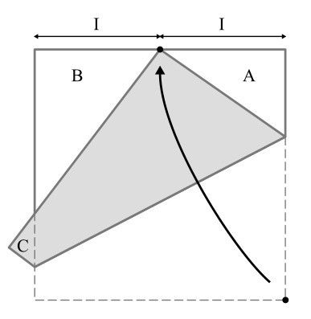
图2-23 芳贺定理：A、B和C都是埃及三角形
芳贺决定另辟蹊径。如果他把一个角折到一条边的中点，会怎么样？1978年，他第一次这样做了，这一简单的折叠打开了通往一个绝妙的新世界的大门。芳贺创造了三个直角三角形，但它们并不是普通的直角三角形，而都是三条边长比例为3：4：5的埃及三角形，是最有历史意义和标志性的三角形。
他对自己的发现感到十分兴奋，但没有人可以分享，于是他给一位对折纸感兴趣的理论物理学家伏见康治教授写了一封关于折纸的信。“我一直没有得到答复。”芳贺说，“但突然他在一本叫作《数学研讨会》的杂志上写了一篇文章，提到了芳贺定理。那是他以另一种方式回复了我。”从那以后，芳贺又给他的另外两个折纸“定理”冠上了自己的名字，而他说他还有50个定理有待发现。他告诉我，这并不是傲慢自大，而是表明这个领域是多么丰富，还有许多内容尚未被开发。
在芳贺定理中，正方形纸的一个角被折到一条边的中点上。芳贺想知道，如果他把一个角折到一条边的一个任意点上，会不会得出有趣的结论。他拿出一张蓝色的正方形纸向我演示，用一支红笔在一条边上任意画了一点。他把另一个角对着这个点折叠，留下一道折痕，然后展开。随后，他将另一个相对的角折到这个点上，留下第二道折痕，正方形里现在有两条相交的线。
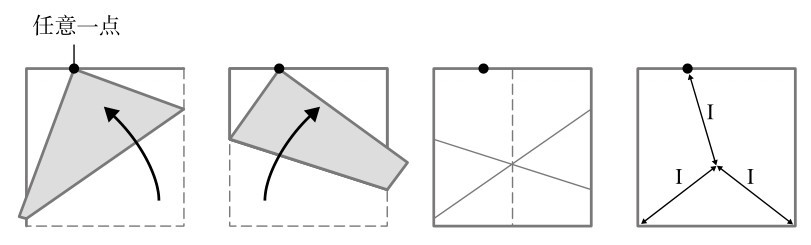
图2-24 芳贺的另一个定理
芳贺告诉我，这两条线的交点总是落在纸的中线上，且任意选择的这个点到交点的距离，总是等于交点到对角的距离。我发现芳贺的折叠太让人着迷了。这一点是随机选择的，它偏离中点，然而折叠的过程就像一个自我修正的机制，把它掰正了。
芳贺给我展示了最后一个图案。他给这一发现取了一个听起来很像俳句的名字：任意产生的“母线”有11个神奇的“孩子”。
第一步：在一张正方形的纸上任意折叠一次。
第二步：将每条边分别折叠到第一步产生的折痕上，随后展开，如图2-25中的A到E所示。
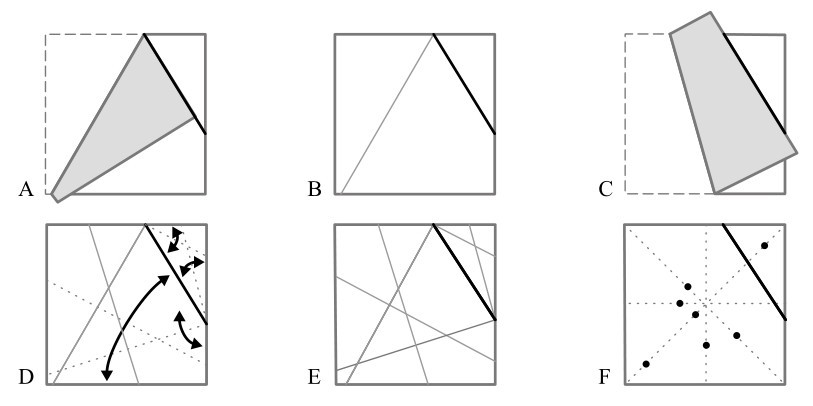
图2-25 母线带来了它11个“孩子”中的7个
这两个步骤做起来非常简单，却揭示了一个美丽的几何秩序。每个交点都在主折痕上，如图F所示。（图中显示了原始正方形内的7个交点，其他4个交点位于主折痕的延长线上。）第一次折叠是随机的，但所有折痕的交点都完美而规则地落在对角线和中线上。
我突然意识到，如果说有人能在现代世界中呈现毕达哥拉斯的灵魂，那一定是芳贺和夫。两人对数学发现的热情都出于对几何的和谐性的好奇心。发现的过程在精神上触动着芳贺，就像2000年前的毕达哥拉斯一样。“大多数日本人都在尝试用折纸创造新的形状。”芳贺说，“而我的目的是摆脱必须创造出某种实体的想法，去发现数学创造的现象。所以我觉得这很有趣。你会发现，在这个极其简单的世界里，你仍然可以探索出迷人的东西。”
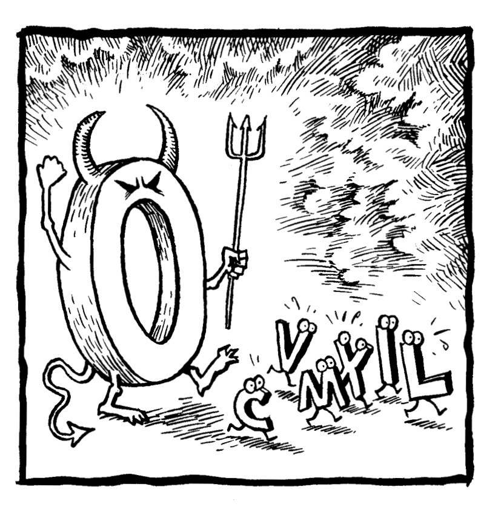
[1] O. J. 辛普森，前橄榄球运动员，曾被卷入轰动一时的“辛普森杀妻案”。——译者注
[2] 吹牛老爹是美国著名说唱歌手、制作人。——编者注
[3] H、Q、Z看起来像总部（headquaters）一词的缩写。——编者注
[4] 芳贺教授生于1934年，在作者写作时（2008年前后）74岁。——编者注